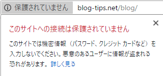

Chrome68で「保護されていません」と表示される際の対処方法
Chrome68のバージョンから、SSLに対応していない通常のHTTPページにアクセスした際に「保護されていません」と表示されるようになりました。
当サイトでもSSL化はしておりませんが、このように表示されてしまいます。

この場合の対処方法は、当然ではありますが、SSL化してHTTPSページに対応するしかありません。
ただ、お使いのレンタルサーバーによっては、無料の独自SSLには対応しておらず、HTTPS化するには高額な費用がかかってしまうケースもあるかと思います。
例えば、「ジオトラスト」や「グローバルサイン」などの有名なSSLブランドしか対応していない場合、年間で数万円程度の更新費用がかります。
特に、法人向けのレンタルサーバーの場合、無料の独自SSLは用意されていない傾向があり、これらの高額なSSLブランドを購入するほかないかもしれません。
一方、大手の個人向けレンタルサーバーの場合、最近では無料の独自SSLブランドの「Let's Encrypt」を利用できるケースが多くなってきました。そのため、できるだけ「Let's Encrypt」対応のレンタルサーバーへ引っ越すことをおすすめします。
概ね、最近のレンタルサーバーは以下の傾向があるかと思います。
- 法人向けサーバー → 無料SSLには非対応（有料SSLブランド購入を推奨か？）
- 個人向けサーバー → 無料の「Let's Encrypt」に対応
- 格安レンタルサーバー → 独自SSLには非対応
つまり、法人向けレンタルサーバーでは、すでに高額な有名ブランドのSSLを設定しているサイトが多いため、無料独自SSLの「Let's Encrypt」に対応してしまうと有料の方を解約されてしまう懸念があるはずです。
そのため、大手の法人向けサーバーでは無料SSLには非対応のままになっているのだろうと思います。無料でも有料でも機能的には変わりはないため、もし無料で使えるのならば、「Let's Encrypt」に乗り換えるのもよいかもしれません。
既に常時SSL化している場合、サイト移転時にサイトダウンが発生するかもしれませんが、それほど大きな影響はないかと思います。
また、格安レンタルサーバーでは、そもそも対応するスペックが不足しているため、こちらも非対応のままなのかもしれません。
ちなみに、当サイトはエックスサーバーを利用していますが、この「Let's Encrypt」可能のようなので、今週末あたりにでも常時SSL化に対応する予定です。